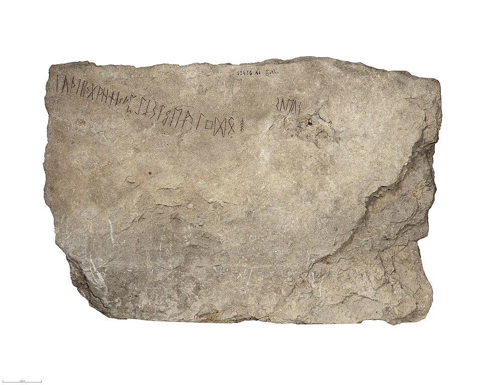

Хронология
Мифологическая лента: от дрожащей пустоты до зелёной земли, вышедшей из моря.
Minn ek mála gyðja forna, fira flestar, þá er forlepu árdaga.
«Я помню деяния древних богинь — и многих людей, что были в давние дни.»
— «Прорицание вёльвы», строфа 2 (Старшая Эдда)

Мифологическая хроника
Здесь нет лет — здесь эпохи: иней, великан, боги, люди и огонь. Порядок событий собран из «Прорицания вёльвы» и прозы Снорри.
Северная хроника не считает годы: она считает повороты — от одного начала мира до другого. Лента ниже идёт по строфам песен: каждая точка на золотой оси — событие, без которого следующий пункт невозможен. Где источники расходятся, лента держит канонический порядок; редкие детали, известные лишь из одной песни, помечены в тексте.
Между огнём Муспельхейма и льдом Нифльхейма простиралась «пропасть дрожи»: у её кромки застывали реки, а иней рос горами.
Из жара и холода появился живой обморок — великан Имир; из его пота и тела пошли все ледяные роды, множась в северной пустоте.
В Мидгард пришёл Бур и поселился там с сыном; от этой линии пошли асы — боги, которые однажды придут в Нифльхейм.
Имира убили; из его тела вырос мир — земля, горы, море, небо. Кровь великана лилась реками: лишь Бур с сыном спаслись на плоту.
Из ясеня и ольхи сотворили Аска и Эмблу: Один дал дыхание, Хёнир — ум, Лёрр — речь. Все люди на свете — их потомки.
Дочери Мендильфари, Соль и Мани, сели в колесницы и поехали по небу: день и ночь начали чередоваться.
Встал Иггдрасиль — ясень, держащий все миры: три корня, источник Урðar под асгардским корнем; у него Нёрны режут судьбы каждый день.
Асы и ваны воюли до изнеможения, потом заключили мир-заступничество: заложниками ходили Хёнир и Мир; с тех пор голова Мимира хранит источник Урðar.
Рождены Фенрир, Ёрмунганд и Хель: волка сковала Глейпнир (Тюр отдал руку), змея бросили в море вокруг Мидгарда, а Хель получила власть над мёртвыми.
Из горнов Свартальфхейма вышли Мьёльнир, Драупнир и золотосвистящий вепрь; за каждое чудо карлики брали цену — вплоть до руки мастера.
Бальдр видел во сне собственную гибель; Фригг взяла клятвы со всего на свете — кроме остроцвета. Ход направил руку Локи стрелой: самый светлый бог пал в своём чертоге.
Наступил великий зимний голод — три зимы без лета; братья перестали узнавать друг друга, честь и песни были забыты (по «Прорицанию вёльвы»).
Глейпнир ослаб — Фенрир вышел на свободу; Гарм покинул ворота Хели; Бифрёст треснул под грузом великанов, а Хеймдалль трубил в Гьялархорн: конец начался.
Тор против Ёрмунганда, Один — в пасти Фенрира (месть принёс Видар), Фрейр на Гулинбюсти — против Сурта. Огонь поднимался к самому небу.
Мир сгорел, море поднялось над горами, звёзды упали с неба; Иггдрасиль сгорел вместе со всем, что на нём жилось.
После конца
Лента не обрывается на шестнадцатом пункте — она замыкается кольцом.
Новый мир начинается с того же, чем начался старый: земля вырастает из моря, как когда-то из крови великана; снова идут дожди и дни. У источника под корнями нового дерева опять режут нити — и то, что случилось однажды, может случиться снова: время севера течёт не по прямой, а по кругу.
Как именно гибнут боги и что остаётся после огня — разложено в разделе «Рагнарёк»; откуда выросло старое дерево и первый человек — в разделе «Космос». А пока лента свёрнута кольцом, можно вернуться к любому пункту: каждая точка на золотой оси ведёт на свою страницу.
События и сказания
24 страниц: мифы, эпизоды и понятия.
Альфвисир
(Alföðr): Отец Альфов
Аусбергир
(Aurgelmir): альтернативное имя Ймира
Бифрост
(Bifröst): радужный мост между Асгардом и Midgard
Бульмёрк
(Bolmerkr): альтернативное имя Ймира
Война Асов и Ванов
(Æsir-Varatíðr): война между Асами и Ванами
Гибель Бальдра
(Baldrs dauði): Ход убил Бальдра омелой
Забастановка Локи
(Loka binding): Локи прикован в Асгарде за убийство Бальдра
Карлы
(Svartálfar): кузнецы, тёмные эльфы, живут в Свартальфхейме
Мидгардсормн
(Miðgarðsormr): альтернативное имя Хюрмунганда
Один на Иггдрасиле
(Óðins hanga): Один повесился на 9 дней на Иггдрасиле
Око Одина
(Óðins auga): Один выколол глаз для мудрости
Похищение Идунн
(Idunnar stulpr): Тьяцци похитил Идунн
Пьянство Локи
(Loka drukk): Локи оскорбляет богов на пиру
Род Одина и Фригг
(Óðinn ok Friggjar): главный род Асов: Один, Фригг, Бальдр, Ход, Вали, Видар, Улль, Хёрд
Род Хёнира и Лодура
(Hónir ok Lóðurr): изначальные боги, созданные из глины
Руна Альгиз
(Algr): защита, щит, олень, связь миров
Руна Матхузанг
(Máth): дом, семейная связь, защита
Руна Наудиз
(Nauð): нужда, давление, выживание, сила сопротивления
Руна Феху
(Fé): богатство, достояние, изобилие
Руна Эйваз
(Íw): падуб, Иггдрасиль, защита, выживание
Светлые Эльфы
(Ljósálfar): красивые, светлые, живут в Альфхейме
Узление Фенрира
(Fenrisulfs binding): боги узлили волка Фенрира
Хлидскьялф
(Hlidskjálf): трон Одина, откуда он видит все миры
Хюрмунганд
(Jörmungandr): мировой змей, обвивающий Midgard